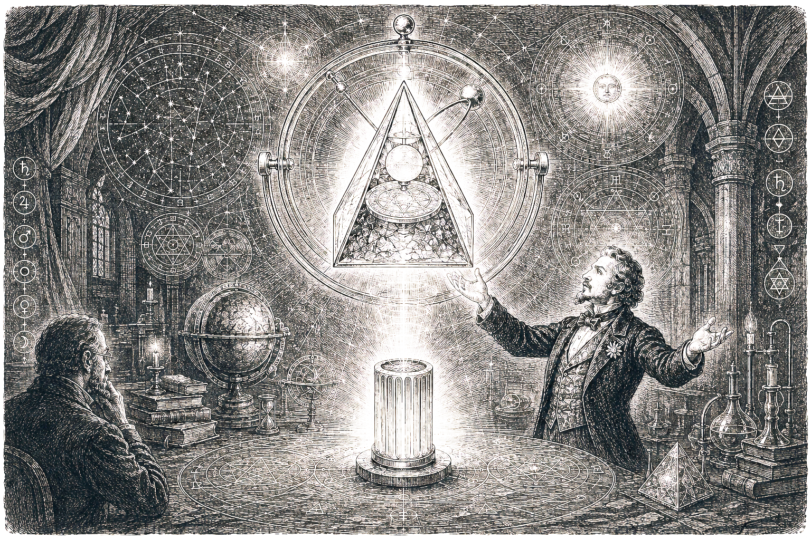

Спѣшите видѣть, почтеннѣйшая публика! Сей-часъ въ нашей столицѣ готовится представленіе, коего еще не знала исторія человѣчества. Слыхали ли вы о предметахъ, кои не подчиняются земному тяготѣнію и парятъ въ воздухѣ, подобно ангельскимъ духамъ, безъ всякихъ нитей и пружинъ? Извѣстный европейскій мистикъ и повелитель тайныхъ силъ природы, графъ Валемонте, послѣ долгихъ странствій по глухимъ предѣламъ Россіи, обрѣлъ подлинные осколки упавшей звѣзды, скрывавшіе вѣковую тайну въ тёмныхъ курганахъ!
На глазахъ у изумлённой аудиторіи почтенный графъ продемонстрируетъ «Эфирный Кристаллъ Оріона» — матерію изъ иныхъ міровъ, которая не горитъ въ самомъ лютомъ пламени и не поддается никакому желѣзному орудію. Сей дивный предметъ испускаетъ въ темнотѣ лазурное сіяніе, услаждающее взоръ, и издаётъ ровный, тихій гулъ, подобный музыкѣ небесныхъ сферъ. Никакой обманъ зрѣнія, никакой искусный фокусъ нѣмецкихъ механиковъ не способенъ повторить сего величія, ибо здѣсь сама природа приподнимаетъ свою таинственную завѣсу.
Каждый пришедшій сможетъ лично убѣдиться въ подлинности сего феномена. Вы увидите, какъ тяжёлые предметы теряютъ свой вѣсъ по одному мановенію руки графа, и какъ мёртвый камень вступаетъ въ бесѣду съ живымъ человѣкомъ посредствомъ свѣтовыхъ знаковъ. Учёные мужи пребываютъ въ глухомъ смятеніи, а суевѣрные люди трепещутъ, но графъ Валемонте готовъ открыть сію высочайшую истину всѣмъ безстрашнымъ умамъ.
Единственное благородное представленіе имѣетъ быть въ непродолжительномъ времени, какъ только завершатся послѣднія приготовленія. Билеты будутъ продаваться въ ограниченномъ числѣ, дабы каждый гость могъ близко созерцать небесное чудо. Спѣшите прикоснуться къ тайнамъ Вселенной, пока онѣ не сокрылись вновь въ туманѣ вѣчности!
— Наблюдатель.
